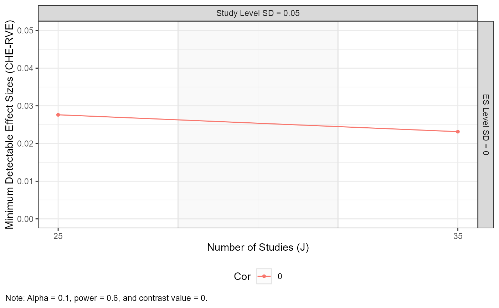

Creates a faceted plot for minimum detectable effect size (mdes)
analyses calculated using mdes_MADE.
Usage
# S3 method for mdes
plot_MADE(
data,
v_lines = NULL,
legend_position = "bottom",
color = TRUE,
numbers = TRUE,
number_size = 2.5,
numbers_ynudge = NULL,
caption = TRUE,
x_lab = NULL,
x_breaks = NULL,
x_limits = NULL,
y_breaks = ggplot2::waiver(),
y_limits = NULL,
y_expand = NULL,
warning = TRUE,
traffic_light_assumptions = NULL,
es_min = NULL,
expected_studies = NULL,
...
)Arguments
- data
Data/object for which the plot should be made.
- v_lines
Integer or vector to specify vertical line(s) in within each plot. Default is
NULL.- legend_position
Character string to specify position of legend. Default is
"bottom".- color
Logical indicating whether to use color in the plot(s). Default is
TRUE.- numbers
Logical indicating whether to number the plots. Default is
TRUE.- number_size
Integer value specifying the size of the (optional) plot numbers. Default is
2.5.- numbers_ynudge
Integer value for vertical nudge of the (optional) plot numbers.
- caption
Logical indicating whether to include a caption with detailed information regarding the analysis. Default is
TRUE.- x_lab
Title for the x-axis. If
NULL(the default), the x_lab is specified automatically.- x_breaks
Optional vector to specify breaks on the x-axis. Default is
NULL.- x_limits
Optional vector of length 2 to specify the limits of the x-axis. Default is
NULL, which allows limits to be determined automatically from the data.- y_breaks
Optional vector to specify breaks on the y-axis.
- y_limits
Optional vector of length 2 to specify the limits of the y-axis.
- y_expand
Optional vector to expand the limits of the y-axis. Default is
NULL.- warning
Logical indicating whether warnings should be returned when multiple models appear in the data. Default is
TRUE.- traffic_light_assumptions
Optional logical to specify coloring of strips of the facet grids to emphasize assumptions about the likelihood the given analytical scenario. See Vembye, Pustejovsky, & Pigott (In preparation) for further details.
- es_min
Optional integer or vector to specify a horizontal line or interval, indicating a benchmark value or values for the minimum effect size of practical concern (default is
NULL).- expected_studies
Optional vector of length 2 specifying a range for the number of studies one expects to include in the meta-analysis. If specified, this interval will be shaded across facet_grip plots (default is
NULL).- ...
Additional arguments available for some classes of objects.
Value
A ggplot plot showing the minimum detectable effect
size across the expected number of studies, faceted by the between-study and
within-study SDs, with different colors, lines, and shapes corresponding to
different values of the assumed sample correlation.
Details
In general, it can be rather difficult to guess/approximate the true
model parameters and sample characteristics a priori. Calculating the
minimum detectable effect size under just a single set of assumptions can
easily be misleading even if the true model and data structure only
slightly diverge from the yielded data and model assumptions. To maximize
the informativeness of the analysis, Vembye, Pustejovsky, & Pigott (In
preparation) suggest accommodating the uncertainty of the power
approximations by reporting or plotting minimum detectable effect size
estimates across a range of possible scenarios, which can be done using
plot_MADE.mdes.
References
Vembye, M. H., Pustejovsky, J. E., & Pigott, T. D. (In preparation). Conducting power analysis for meta-analysis of dependent effect sizes: Common guidelines and an introduction to the POMADE R package.
Examples
mdes_MADE(
J = c(25, 35),
tau = 0.05,
omega = 0,
rho = 0,
target_power = .6,
alpha = 0.1,
sigma2_dist = 4 / 200,
n_ES_dist = 8,
seed = 10052510
) |>
plot_MADE(expected_studies = c(28, 32), numbers = FALSE)
#> Warning: Notice: It is generally recommended not to draw on balanced assumptions regarding the study precision (sigma2js) or the number of effect sizes per study (kjs). See Figures 2A and 2B in Vembye, Pustejovsky, and Pigott (2022).
